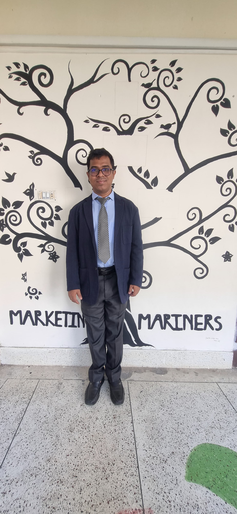

Welcome to My Portfolio
Data Analyst & Business Intelligence Specialist
Transforming raw database records into scalable relational data pipelines, optimized analytical queries, and clear executive-facing operational dashboards.

Expertise Spectrum
Targeted Operational Domains
Practical applications of analytical modeling across commercial sectors.
Supply Chain & Operations
Auditing component workflows, predicting lead time variances, and optimizing material tracking matrix layouts within the garment accessories sector.
E-Commerce & Checkout Funnels
Isolating cohort retention thresholds, processing digital ledger logs, and tracing multi-tier conversion dropouts.
Corporate Administration
Merging core business administration foundations (BBA) with engineering analytics solutions to drive metric clarity for key stakeholders.
System Telemetry
Measurable Code Execution Milestones
A look at operational data metrics across active projects.
Verified Endorsements
Professional Recommendations
Feedback tracking from database administrators and operational supervisors.
"Shayantha brings structural rigor to tabular datasets. His optimization of complex PostgreSQL queries effectively slashed layout lag across our production logs."
"His clean conversion of flat Excel data into structured database engines transformed how we audited our weekly logistics throughput graphs."